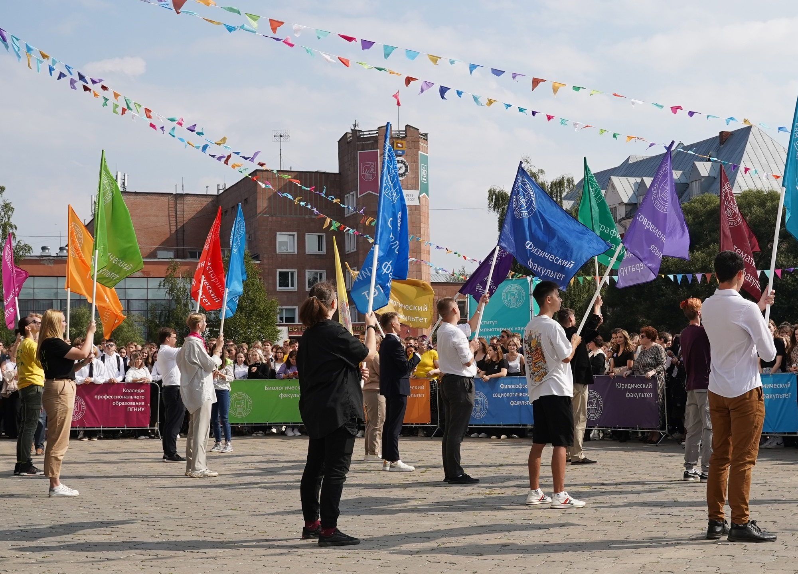

Университет принял в свои стены первых студентов
День знаний в ПГНИУ!
Для просмотра информации и фотографий с праздника переходите в нашу группу ВКонтакте.
Поступление на бюджетные места
На сайте Пермского университета появились новые списки зачисленных.Поздравляем первокурсников с зачислением!
Голосование за объекты благоустройства
Чтобы вы хотели видеть на территории университета? Голосуйте на сайте университета

Волочков Александр Андреевич
Алгебра и аналитическая геометрия

Айдаров Юрий Рафаэлевич
Основы Web-технологий

Шеина Татьяна Юрьевна
Алгоритмизация и программирование
Кампус Пермского государственного национального исследовательского университета (ПГНИУ) напоминает небольшой европейский городок. На пересечении двух уютных улиц удобно разместились центральный сквер с фонтаном, башня с часами, площадь, ботанический сад, музеи, учебные аудитории, библиотеки и дворец культуры. Недаром кампус часто называют городом в городе и даже маленьким государством.


Подробнее об университете - Переходите в официальную группу ВКонтакте.

Министерство образования и науки РФ

Министерство образования и науки города Перми

Департамент образования Пермского края

Электронное портфолио

Госуслуги

Контактные данные

Проезд до ост. ДКЖ или Папанинцев. Автобусами: М6, 10, 14, 25, 40, 54, 56, 64, 66, 67, 74
+7(342) 222-81-26, 235-29-05
Директор: Зам. директора:
Социальные сети: